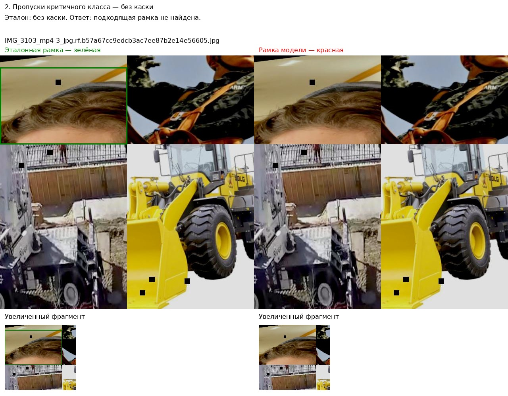
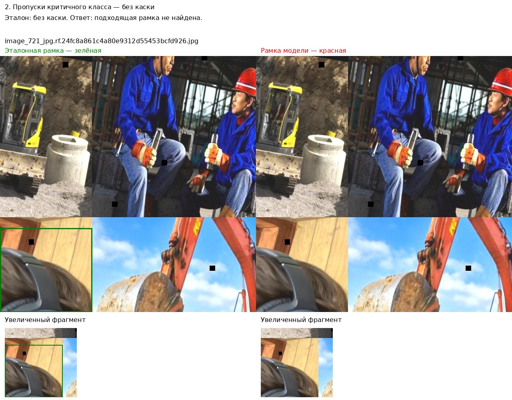
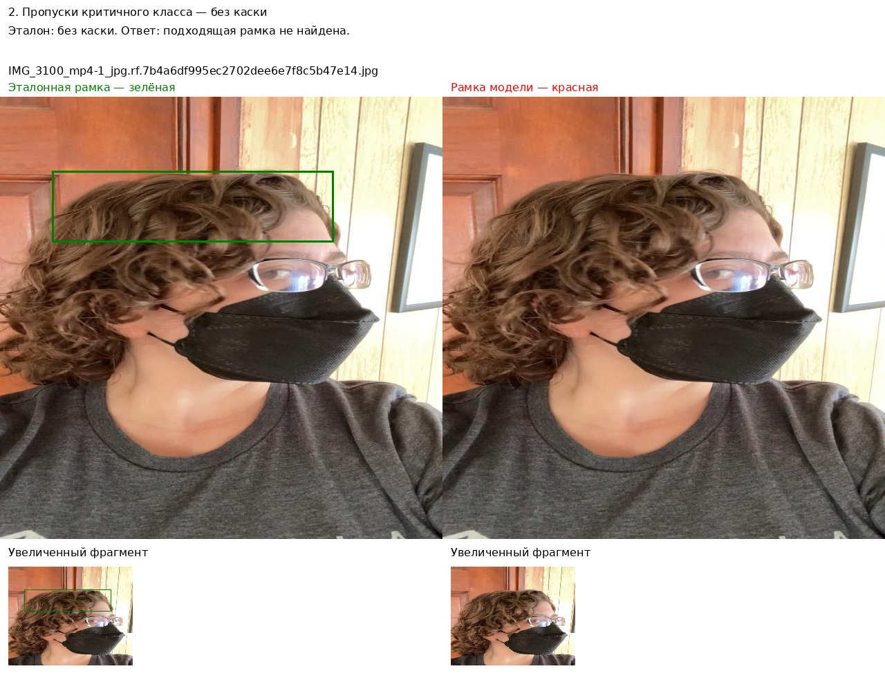
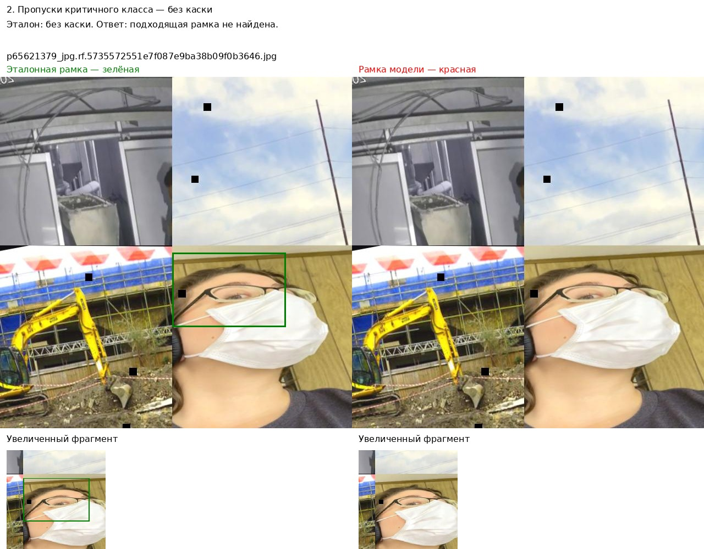

Все галереи2. Пропуски критичного класса — без каски
Для эталона NO-Hardhat нет ответа того же класса с IoU ≥ 0.5.
Слева эталон, справа ответ модели. Показаны только рассматриваемые рамки.
Кандидатов: 132; показано кадров: 4.

IMG_3103_mp4-3_jpg.rf.b57a67cc9edcb3ac7ee87b2e14e56605.jpg
Эталон: без каски. Ответ: подходящая рамка не найдена.
image_721_jpg.rf.24fc8a861c4a80e9312d55453bcfd926.jpg
Эталон: без каски. Ответ: подходящая рамка не найдена.
IMG_3100_mp4-1_jpg.rf.7b4a6df995ec2702dee6e7f8c5b47e14.jpg
Эталон: без каски. Ответ: подходящая рамка не найдена.
p65621379_jpg.rf.5735572551e7f087e9ba38b09f0b3646.jpg
Эталон: без каски. Ответ: подходящая рамка не найдена.